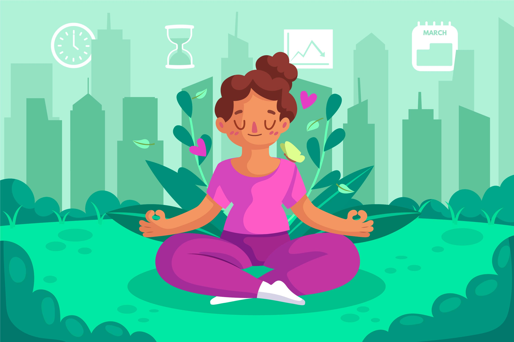

Atribuição de Direitos Autorais
-

Imagem de pikisuperstar no Freepik -

Imagem de Freepik -
![Imagem 3 da tela inicial do carrossel.
Imagem de família em um jardim, com uma casa azul e uma cerca ao fundo da imagem e núvens e pássaros no céu.
Mulher vestindo blusa vermelha, calça azul e descalça, fazendo o número quatro com as pernas e
gesto de agradecimento com as mãos. Menina ao lado direito da mulher, em cima do tapete, vestindo uma blusa
rosa clara e azul clara, também descalça, e espelhando a posição da mulher. Ao lado esquerdo da mulher,
tem um menino vestindo camisa azul e calça vermelha, usando sapato azul, sentado na grama,
brincando com cachorro branco com manchas caramelo. E nos dois lados da imagem, temos duas plantas e uma libélula.](../imagens/index/tela-inicial-3.jpg)
Imagem de pch.vector no Freepik
-
Image by pikisuperstar on Freepik -
 Imagem de Freepik
* As logomarcas das redes sociais e demais imagens foram utilizadas através dos recursos de pesquisa do Canva.